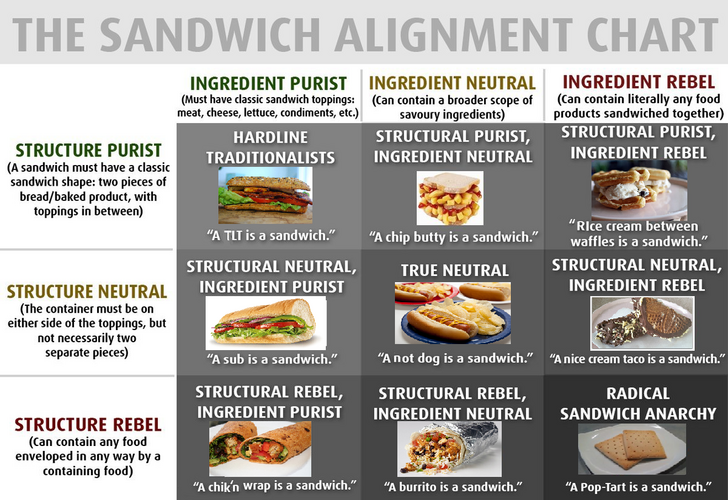
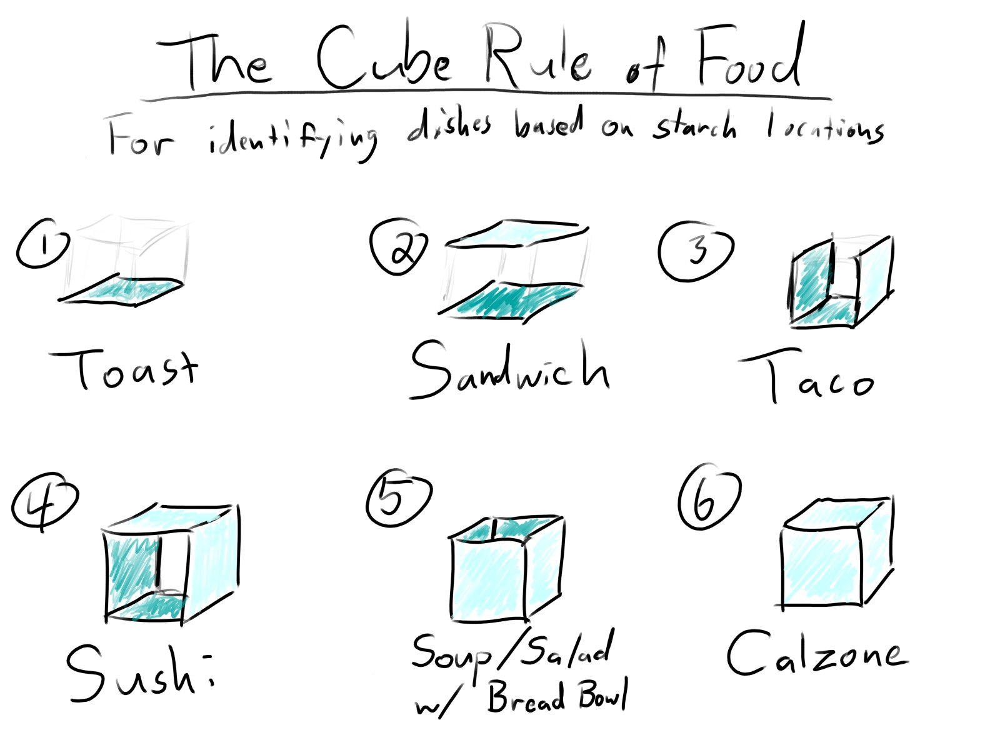

Dish Taxonomy
Foreward
TBD
Origins
In 1977 TSR Inc. published the original Dungeons & Dragons Basic Set. It included the first alignment chart organized by axes of law and chaos and good and evil. These axes create nine potential alignments that could be used to ascribe a moral and ideological standing for a character, city, or beast in a pen and paper Dungeons & Dragons game.
The Meme
The New York State Department of Taxation and Finance asserts that hot dogs are sandwiches (and thus require a sales tax), much to the chagrin of Twitter users everywhere.
A Dungeons & Dragons style alignment chart of foods appeared sometime thereafter, created by Twitter user @matttomic.
The chart aimed to outline a basic theory of dish organization and introduces nine general categories of food along the axis of sandwich construction.
The chart ranges from hardline traditionalist sandwich construction (BLT) to radical sandwich anarchy (Poptart).
The Sequel
Later, Twitter user @Phosphatide introduced “The Cube Rule of Food Identification.” The basic premise of this rule is that the location of the starch in the dish relative to the cube model determines how the dish is categorized.
A lack of starch, however, is used as a catch-all for anything without.
The result is a starchless category that contains a significantly larger number of dishes than any other category.
There are X primary issues I’d like to attempt to rectify with the cube rule.
- The lack of a starch codifies the dish as a salad. This is problematic because steak, chocolate, and soup are very different dishes that are very much NOT salads.
- The cake classification requires that the cube is bisected to accommodate a stacked dish.
The Spectrum
At the extreme ends of the spectrum are sandwiches, soups, and salads. While there are perfect soups, salads, and sandwiches, they are exceedingly rare, and the majority of dishes lie within the spectrum of dish organization.
Each point of the spectrum is defined as follows:
Ingredient
A single nutritious item.Sandwich
Dissimilar ingredients combined and organized in a structure. One ingredient supports, envelops, or surrounds another. Solid at room temperature.Soup
Dissimilar ingredients combined in an unorganized structure. Liquid at room temperature, and the majority ingredient is a fluid.Salad
Dissimilar ingredients combined in an organized structure. Solid at room temperature, the majority of ingredients being solid.The Rules
All dishes are comprised of ingredients. Combining ingredients deviates the category of a dish to one side of the spectrum from the center of ingredients
Categories and Intermediaries
A combination of ingredients has an emergent property of a category. Primary categories are described above (soup, salad, sandwich) while intermediary categories serve as a convenience for discussion. Examples of intermediary categories are as follows:
- Stew: Halfway between a soup and a salad
- Pizza: Halfway between a salad and a sandwich
- Wellington: Halfway between a sandwich and a soup
Examples
Below is a list of examples to assist in arguing help further understand the spectrum.
Salt
Taco
PopTart
Boeuf Bourguignon

Tomato Bisque
Glossary of Terms
Dish: The food contained or served in a meal; a combination of nutritious ingredients.
Ingredient: A single nutritious item combined with other nutritious items to create a dish.
Soup: A dish that is liquid at room temperature; typically made by boiling meats and or vegetables in water or stock.
Salad: Comprised of cooked or uncooked vegetables, usually seasoned with oil or other similar ingredients; sometimes served with meats and other toppings.
Sandwich: Two or more pieces of bread or a split roll with a filling in-between
Acknowledgements
Cherie Saffold - for putting up with my bullshit
Isaac Wuest - for helping me stretch this to its limits
Jacob Wiser - for showing me how to organize and present my argument
Simeon Prieskorn - for indulging and supporting
Matt Walker - for the healthy skepticism and pro sandwich rhetoric
Matt Suitt - for helping me realize that I could be passionate enough about this to make someone angry
Bradley Hall - for hearing out and supporting my classifications
Nathan Ratcliff - for always asking what dishes are what category and why